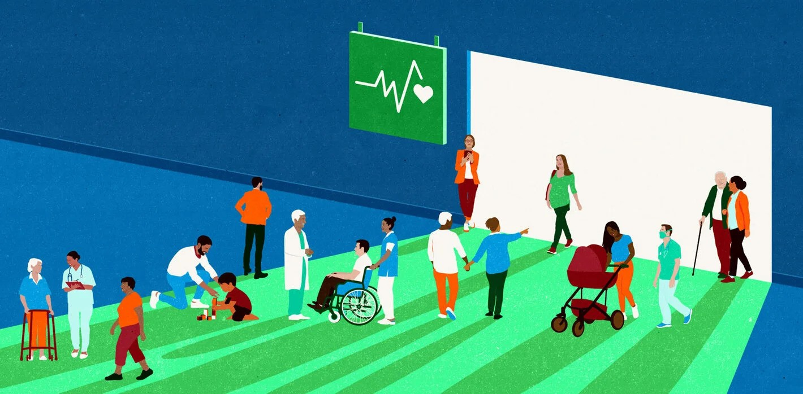
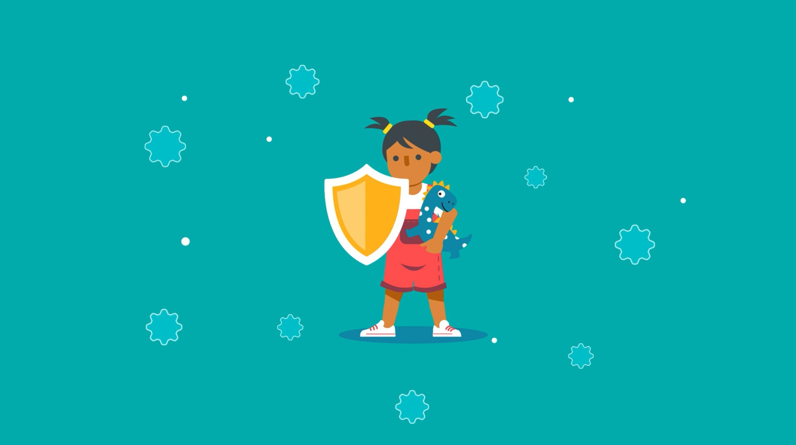

VITALITY
HUB
HUB
GOOD HEALTH AND
WELL-BEING
WELL-BEING
This page will delve into the goal in more detail, discussing how we can reach these targets and sharing helpful links. As previously addressed, this United Nations Goal embodies a global commitment to achieve universal health coverage, aiming to ensure that everyone regardless of their socioeconomic status or geographical location, has access to essential health services without facing financial hardship.
Achieving Goal 3 demands a comprehensive strategy, including investments in robust health systems, healthcare worker training, and access to medical supplies. Health education campaigns are vital for disease prevention and promoting healthy lifestyles. Access to affordable healthcare, including maternal and child services, vaccinations, and disease treatments, must be prioritized through policies for universal coverage. Addressing social determinants like poverty and gender inequality is crucial for sustainable health improvements. By implementing these measures, global solidarity can be fostered, advancing the vision of SDG 3 for universal health and well-being.
The COVID-19 pandemic has significantly impacted Sustainable Development Goal 3, disrupting healthcare services worldwide and exacerbating health inequalities. Health systems faced strain as resources were redirected to pandemic response, leading to delays in essential services and increased mortality rates. Marginalized communities experienced disproportionate impacts, highlighting existing disparities.Progress towards SDG 3 targets was hindered as attention and resources shifted to pandemic mitigation, underscoring the urgent need for resilient health systems and equitable healthcare provision.
By promoting health education, supporting healthcare initiatives, and advocating for equitable access to healthcare allows others to become more informed about their health. Raising awareness about mental health are impactful actions as well as engaging in healthy behaviors and supporting policies that prioritize universal health coverage can also contribute to this goal.